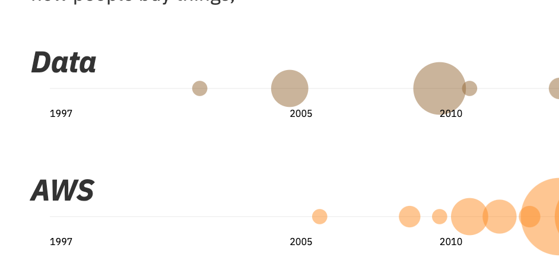

AnchorageCovidTest.org - Anchorage COVID-19 Testing Finder
AnchorageCovidTest.org - Anchorage COVID-19 Testing Finder
This website shows daily COVID-19 testing locations across Anchorage, Alaska. No maps, no forms, no filters. This is used by the city of Anchorage.
 Beltway Billions D3
Beltway Billions D3
I created a project to explore how a half-trillion dollars of federal funds go to Washington D.C. contractors and competitors in 50 states.
 Every Holding Period - 90 Years of Financial Simulation
Every Holding Period - 90 Years of Financial Simulation
This D3 and React project allows users to create a custom holding period portfolio of assets and compare returns with historical data.
 Early Vote Tracker
Early Vote Tracker
TL:DR, I made an rmarkdown site tracking Alaska’s early and mail vote as ballots arrived each day in October/November 2020.
 American Migration Experiment
American Migration Experiment
Experimental Mapbox-gl.js project to draw live geojson in reponse to mouse movement.
 Runways
Runways
Experimental D3 for exploring airport runway orientations across the United States.
ICE Contracts
Experimental react.js app to organize contracts.
Experimental react.js app to organize contracts.
 Where We Move
Where We Move
D3 map redrawing based on mouseover. Inspired by NYTimes.
 Marijuana Stores
Marijuana Stores
Exploring the endlessly creative Alaska marijuana store names with React.

Amazon Text Analysis
R tidytext sentiment and topic analysis of two decades of Amazon shareholder letters + D3 visualizations.
R tidytext sentiment and topic analysis of two decades of Amazon shareholder letters + D3 visualizations.
Longline Podcast Website
Longform podcast website. Pilot episode about Alaska long range radar installations.
Longform podcast website. Pilot episode about Alaska long range radar installations.
 PFD Invest
PFD Invest
A what-if calculator for compounding Alaska Permanent Fund Dividends over four decades. One of my first React projects.
 Permanent Fund Holdings Twitter Bot
Permanent Fund Holdings Twitter Bot
A node.js bot that tweets the thousands of companies Alaskans own in the Alaska Permanent Fund.
Election Precinct Map
Mapbox-GL election results precinct map for Anchroage Daily News.
Mapbox-GL election results precinct map for Anchroage Daily News.
Iditarod Projects
 Flying 1,000 Miles on the Iditarod Trail
Flying 1,000 Miles on the Iditarod Trail
This Mapbox-gl D3 experiment blends race results visualizations, satellite imagery, and 1,000 miles of simulated flying along the trail.
 Iditarod D3
Iditarod D3
One of my first D3 projects. This set of D3 visualizations involving scraping 40 years of Iditarod Trail Sled Dog race splits.
 Iditarod Checkpoint Animation
Iditarod Checkpoint Animation
This animation recreates the entire 2019 Iditarod using checkpoint times sheets. R and D3. Best on desktop.
 Iditarod Scratches
Iditarod Scratches
Exploring a particularly large amount of Iditrod Sled Dog Race scratches.